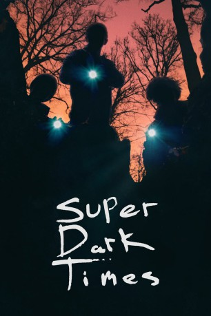

#11321 Super Dark Times
 
 IMDB-Wertung: 6.6 / 10
IMDB-Wertung: 6.6 / 10  Tomatometer: 88
Tomatometer: 88  Metascore: 75
Metascore: 75 
Beste Freunde kann niemand trennen. Wo immer Zach (Owen Campbell) auftaucht, da ist auch Josh (Charlie Tahan) nicht weit. Sie gehen auf die gleiche Schule und verbringen ihre Nachmittage zusammen in einem etikettenhaft sauberen Vorort. Langeweile pur. Und beide haben noch etwas gemeinsam: Die Faszination für die süße Allison (Elizabeth Cappuccino), der sie irgendwie näherzukommen versuchen. Als sie statt ihrer heimlichen Liebe aufzulauern mit Daryl (Max Talisman) und Charlie (Sawyer Barth) rumhängen, passiert zunächst mal wieder nichts Aufregendes. Doch dann ändert sich für die vier alles, als sie im Zimmer von Joshs Bruder ein Samuraischwert finden. Es kommt zu einem tragischen Unfall und für die Teenager brechen superfinstere Zeiten an…
Jahr: 2017
Dauer: 103 Minuten
FSK: 16
Land: USA Studio: Indeed FilmTonspuren: DTS - ,
Untertitel: Deutsch, Englisch,
Auflösung: 1080p (1920x800) Größe: 5785 MB
Genre: Thriller, Drama
Regisseur: Kevin Phillips
Drehbuch: Ben Collins, Luke Piotrowski
Soundtrack: Ben Frost
Darsteller:
- Owen Campbell als Zach
 Charlie Tahan als Josh
Charlie Tahan als Josh- Elizabeth Cappuccino als Allison
- Max Talisman als Daryl
- Sawyer Barth als Charlie
- Casey Sullivan als Senior
 Amy Hargreaves als
Amy Hargreaves als - Ethan Botwick als
- Anni Krueger als
- Justin Rose als
- Samantha Jones als
- Hayden Oliver als
- Nicole Emmons als
 Bettina Skye als
Bettina Skye als  Bern Cohen als
Bern Cohen als - Jeffrey Alan Solomon als
- Vin Craig als
- Adea Lennox als
- Philip H. Ashley als
- Kortnee Simmons als
- Alfredo Romeo Suarez als
 Lorenzo Beronilla als
Lorenzo Beronilla als - Julianna Austin als
- Michael Henshaw als
- Rachel Lennox als
- Rory J. Roche als
- Muffy Haggerty als
- Eric Salamone als
- Reese Peters als
- Ernie Bonelli Jr. als
- Dale Wolfield als
- Carl Arcilesi als
- Melanie Capparelli als
- Mick Coleman als
- Cole Connell als
- Rupie Keil als
- Rock Ryan als
- Sarah Soltish als
- Gabrielle Vuillaume als
Datei: X:\2017(N-Z)\Super Dark Times (2017, FSK16, 1920x800).mkv seit 18.06.2019
Festplatte: HD 2017(A-Z)-2018(A-F)
 Es gibt insgesamt 170 Filme in der Gruppe '2017(N-Z)'
Es gibt insgesamt 170 Filme in der Gruppe '2017(N-Z)'